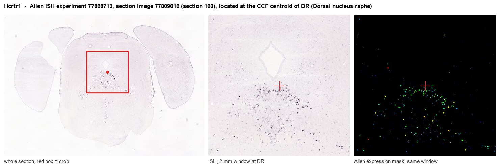

Hcrtr1
Orexin/Hypocretin receptor type 1 (Hypocretin receptor type 1) (Orexin receptor type 1) (Ox-1-R) (Ox1-R) (Ox1R)
Spatial tier: RESTRICTED · Class: GPCR · Top region: DR (Dorsal nucleus raphe) · Positive regions: 24/554
43.1Discovery Score
38.8Targetability Score
CEvidence grade C
What this means: Hcrtr1: fine CCF profile is restricted toward DR (top regions: DR, LC, RO, SLC, B; 24 positive regions); direct spatial validation is still required.
Function in DR: evidence, prediction, innovation
- Gene function
- HCRTR1 (orexin receptor type 1, OX1R) is a class A G-protein-coupled receptor for the lateral-hypothalamic neuropeptides orexin-A and orexin-B, with roughly tenfold selectivity for orexin-A. It couples predominantly to Gq, driving phospholipase C, intracellular calcium release and closure of potassium channels, so its net effect on target neurons is strong, slow depolarisation.
- Region function
- The dorsal raphe nucleus is the largest serotonergic cell group in the brain, projecting broadly to cortex, striatum and limbic structures; it shapes mood, patience and reward processing, arousal state and stress responses, and also contains GABAergic, dopaminergic and glutamatergic neurons.
- Published in this region
- direct Direct. Brown et al. 2002 showed that orexin directly and convergently excites dorsal raphe serotonergic neurons as part of a multi-transmitter arousal input, and Wang et al. 2005 demonstrated that orexinergic axons form synapses on OX1R-containing neurons in the dorsal raphe, including serotonergic cells. Yang et al. 2019 showed that DR serotonergic neurons mediate the arousal-promoting effect of orexin during isoflurane anaesthesia, and Xiao et al. 2021 showed that OX1R and OX2R in serotonergic neurons differentially control peripheral glucose metabolism.
- Predicted function
- Prediction: OX1R is predicted to be the receptor that converts lateral-hypothalamic arousal and motivational drive into sustained serotonergic tone, so its loss should selectively impair state-dependent rather than baseline serotonin signalling. Conditional Hcrtr1 deletion in Sert-Cre neurons is predicted to leave overall sleep architecture largely intact but blunt arousal-associated increases in DR firing, slow emergence from anaesthesia, and reduce stress- and food-cue-evoked serotonin release measured by GRAB-5HT photometry; the selective antagonist SB-334867 infused into DR should reproduce this acutely.
- Innovation
- ★★☆☆☆ 2/5 Orexin excitation of dorsal raphe serotonergic neurons is well documented, but cell-type-conditional OX1R deletion restricted to this nucleus remains largely unexplored.
- Tools
- Hcrtr1 knockout and Hcrtr1 floxed mice; Hcrtr1-Cre lines; selective antagonist SB-334867 and the dual antagonists suvorexant and almorexant; orexin-A peptide; Sert-Cre/Pet1-Cre for serotonergic restriction; GRAB-5HT sensors for readout.
- References
Direct evidence located at the region

Allen ISH experiment 77868713, section image 77809016 (section 160): the section that contains the CCF centroid of Dorsal nucleus raphe according to the Allen image-to-atlas alignment (reference_to_image), with a 2 mm window around that point. Left: whole section, red box = window. Middle: ISH signal. Right: Allen's expression-mask view of the same window. open this image in the Allen viewer
Look it up yourself: Allen Mouse Brain ISH for Hcrtr1Allen reference atlas: DR (structure 872)ABC Atlas MERFISH viewer(in the ABC Atlas choose dataset MERFISH-C57BL6J-638850-CCF, colour cells by gene "Hcrtr1" or by parcellation_substructure "DR")All genes confined to DR + 3-D brain
Direct spatial evidence
MERFISH REGION LOCATOR

Regional expression figure

Predicted WMB × fine-CCF profile; not direct full-transcriptome spatial measurement.
Spatial profile
Evidence and specificity
- Evidence status
- PREDICTED_FINE
- Direct sources
- None; predicted localization only
- Exclusive threshold
- 12 positive regions out of 554
- Spatial specificity
- 0.291
- Top-region fraction
- 0.056
- Filter status
- PASS
Interpretation limits
- Cell-type-to-region projection is imputed expression, not direct spatial measurement.
- Adult reference atlases do not establish stability across age, sex, strain, state, or disease.
- Transcript abundance does not guarantee protein abundance or genetic-tool performance.